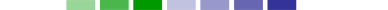
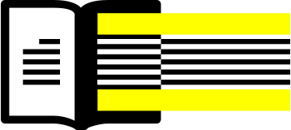

CC-lisensoitujen teosten määrä on lähes kolminkertaistunut viimeiden viiden vuoden aikana
| Lisensoituja teoksia yhteensä | |
|---|---|
| 140 miljoonaa | 2006 |
| 400 miljoonaa | 2010 |
| 882 miljoonaa | 2014 |
| 1.1 miljardia | 2015 |

| CC0, PDM + PD-työkalu (ei enää käytössä) | 3% |
| CC BY | 24% |
| CC BY SA | 37% |
| CC BY ND | 2% |
| CC BY NC | 6% |
| CC BY-NC-SA | 14% |
| CC BY NC ND | 14% |

Avoimempi — Rajoittavampi. Vähemmän rajoittavat VAPAAN KULTTUURIN lisenssit sallivat sekä kaupallisen käytön että muunnelmat

| Year |
|
PDM | CC0 | Lisensoituja teoksia yhteensä |
|---|---|---|---|---|
| 2006 | 3.2 miljoonaa | - | - | 3.2 miljoonaa |
| 2014 | 5.7 miljoonaa | 1.5 miljoonaa | 10.3 miljoonaa | 17.5 miljoonaa |
| 2015 | 10 miljoonaa | 2.6 miljoonaa | 22.3 miljoonaa | 34.9 miljoonaa |
 = 1 miljardia
= 1 miljardia
| (العربية) (arabia) |
| беларускі (valkovenäjä) |
| Català (katalaani) |
| 中国 (kiina*) |
| hrvatski (koratia) |
| čeština (tšekki) |
| danske (tanska) |
| Nederlands (hollanti) |
| English (englanti*) |
| Esperanton (esperanto) |
| suomi (suomi) |
| français (ranska*) |
| galego (galicia) |
| Deutsche (saksa*) |
| ελληνικά (kreikka) |
| Magyar (unkari) |
| bahasa Indones (indonesia) |
| italiano (italia) |
| 日本語 (japani) |
| 한국어 (korea) |
| Latvijā (latvia) |
| Lietuvos (liettua) |
| Melayu (malaiji) |
| te reo Maori (maori) |
| norsk (norja) |
| *فارسي (persia (farsi)) |
| polski (puola) |
| português (portugali) |
| Română (romania) |
| Русский (venäjä) |
| Español (espanja*) |
| svenska (ruotsi) |
| Türk (turkki) |
| Український (ukraina) |


| - | Lisensoituja teoksia yhteensä |
|---|---|
| Flickr | 356 miljoonaa valokuvaa |
| Bandcamp | 1,95 miljoonaa ääniraitaa |
| Wikipedia | 35,9 miljoonaa artikkelia |
| YouTube | 13 miljoonaa videota |
| Jamendo | 496,000 ääniraitaa |
| 500px | 661,000 photos |
| Vimeo | 5 miljoonaa videota |
| Internet Archive | 2 miljoonaa videota |
| FMA | 86,000 ääniraitaa |
| Wikimedia Commons | 21.6 million media files |
| Tribe of Noise | 29,000 ääniraitaa |
| PLOS | 140 000 artikkelia |
| Europeana | 20,9 miljoonaa digitalisaatiota |
| Skills Commons | 24 000 työssäoppimisen materiaalia |
| Boundless | 49,000 open educational resources |
| MIT opencourseware | 2300 kurssia |
Vuonna 2015 yhtä uudet alustat, kuten Medium ja edX, lisäsivät CC-lisenssit vaihtoehtona käyttäjilleen. Flickr lisäsi tuen CC0- ja PD-merkinnöille.


Avoin opetus – Argentiina, Australia, Kanada, Euroopan Unioni, Indonesia, Intia, Alankomaat, Mauritius, Uusi-Seelanti, Puola, Romania, Skotlanti, Slovenia, Slovakia, Etelä-Afrikka, Yhdistyneet Kuningaskunnat, Yhdysvallat, Uruguay, Wales.

$$174 MILJOONAA TÄHÄN MENNESSÄ


CC-sisarjärjestöt Lähi-Idässa ja Pohjois-Afrikassa kokoontuvat kahteen historialliseen tapaamiseen
Al Jazeera English ottaa käyttöön CC-lisensoitua interaktiivista materiaalia ja infografiikkaa Al Jazeera Labsilta
Etelä-Afrikka julkaisee parlamenttiaineistonsa 17 vuoden ajalta CC BY -lisenssillä
Afrikan CC-sisarjärjestöt ja WikiAfrica käynnistävät toisen vuotuisen Wiki Loves Africa -kampanjan
African Storybook -projekti ja Book Dash tuottavat CC-lisensoituja lasten kirjoja yhdessä CC-sisarjärjestöjen kanssa
CC Portugali julkaisee “Liiketoiminnan CC-työkalupakin”
CC-sisarjärjestöt työskentelevät lainsäätäjien kanssa toteuttaakseen EU:n direktiivin tekijänoikeuksien kollektiivisesta hallinnoinnista
CC Korea isännöi Creative Commonsin 2015 globaalia tapaamista Soulissa
Kiinankieliset sisarjärjestöt kääntävät 4.0-lisenssejä yli kulttuurien ja aikarajojen
Modernin Taiteen Museo (MoMA) New Yorkissa hyväksyy CC-logon pysyvään kokoelmaansa
USAn työministeriön $2 miljardin rahoitusta saaneet julkaisevat ensimmäiset ammatillisen koulutuksen avoimet oppisisältönsä
Latinalaisen Amerikan CC:n miniavustusohjelma myöntää rahoitusta El Salvadorin, Costa Rican ja Paraguayn sisarprojektien perustamiseksi
CC Uruguay kääntää Avoimen lisensoinnin politiikan työkalupakin espanjaksi
Virittäydy Creative Commons -asioihin. Seuraa meitä Twitterissä ja Facebookissa.